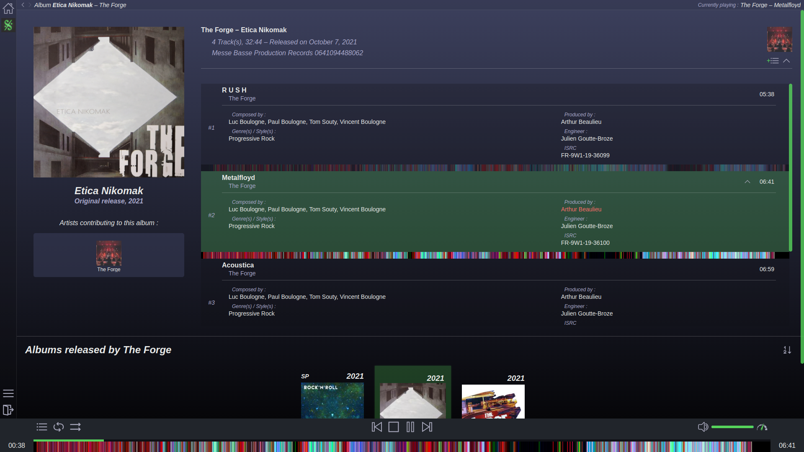

Based on a clean, well-tagged library, this software offers several views that takes the most of those data to give the best experience. To have this clean library, a file naming and tagging convention has been edited so you can understand how to prepare your files and folders. Those naming and tagging rules were described by sticking to the industry standards, in order to have the maximum information on each release.
It features a user system based on invitation codes from already registered users, in order to restrict the access on your instance to the people you wish. The app then features several views allowing to browse the library (per artists, albums, years, genres, labels, producers, authors and so many more), each views being tightly linked to each other thanks to the file naming and tagging convention. Users also have the ability to create playlist that can be private or public. It also implements moodbars to have a great visualization of each track's style and rythmical structure. ManaZeak features several other visualizations, but we will keep the magic for now and let you discover by yourself!
This project is still under development and a lot of features are still on their way to this platform ; audio visualizers, playlists, smart suggestions, advanced sorting, musicology, online editing and so many more. But we hope that we will be able to put online a demo soon enough so you can give it a try!
In September 2017, ManaZeak was born as a graduation project initiated by Arthur Beaulieu and Pierre Bouniol, at ESIEA Paris. By the end of this successfull academic project in February 2018, they have decided to make it a real open source project so ManaZeak could grow further. Several people were involved in the journey and helped us out on miscellaneous subjects revolving around ManaZeak. This proof of concept has been transformed through the years, moving from Django to Spring boot. On a technologic standpoint, ManaZeak relies on Docker, PostgreSQL, SyncThing, Webpack and d3.js. Because we want to provide the best software we can, we use several tools to perform routines that ensure the app meets our quality standards.

The ManaZeak Organization is of course handling the ManaZeak development, but there are also several other projects morre or less related to ManaZeak. The first one, called MzkOstrichRemover, is a python script that will crawl a given folder, in order to check if an audio library is conforming to the file naming and tagging convention. This powerful tool ensures your files are ready to be used in ManaZeak so it can take the best out of them. Another one, called MzkWorldMap, is a ManaZeak visualization plugin of an interactive globe, so the user can click on a country and check for artists from there.
To help you go through the installation process, you can consult the repository's wiki to have a better understanding on how to manage a ManaZeak instance. If you wish to learn more about how ManaZeak is working, refer to the online documentation, that explains both the frontend and the backend code. This project is open source, released with a GPL-3.0 license. It represents our vision of an online listening platform, but we might be missing some great ideas! Feel free to reach us using mail/DM, or open an issue with your feature request so we can fulfil it.

Arthur Beaulieu
Maintainer (Front)

Pierre Bouniol
Maintainer (Back & Ops)

Valentin
Front

Guilhem
Scripting

Pierre-Balthazar
Docker

Armand
Docker

Raphaël
Front

Erwan
Comrade